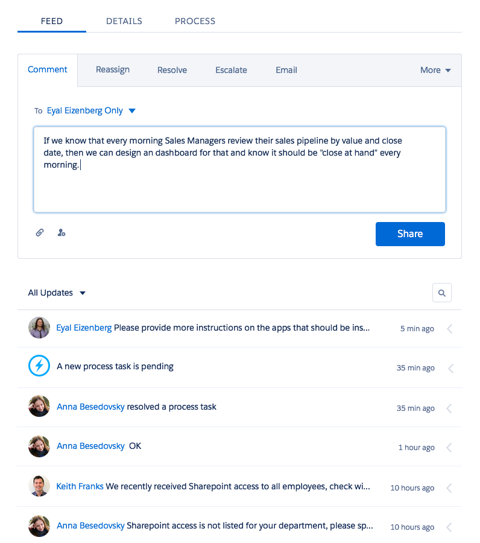
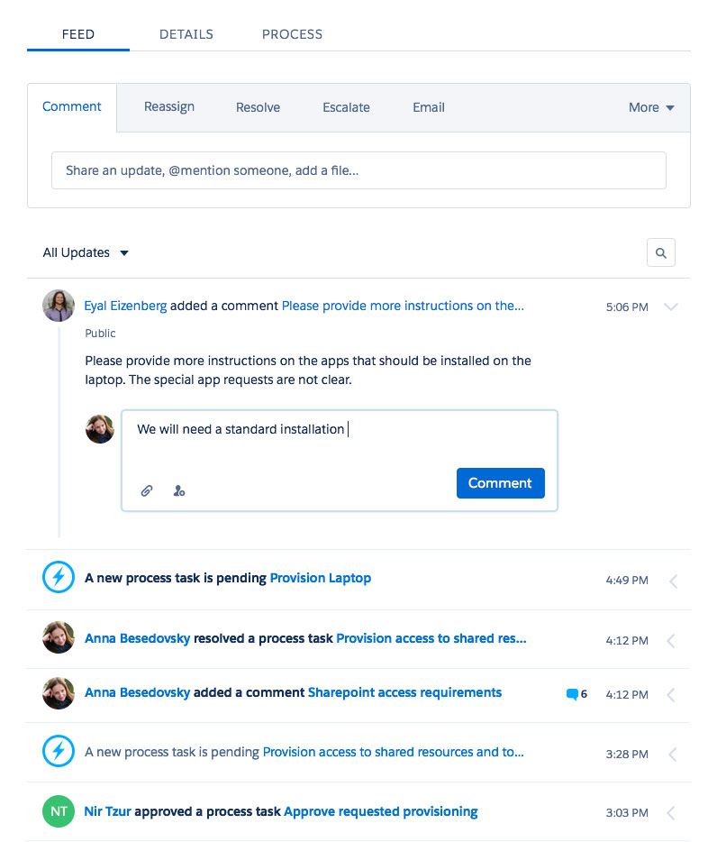
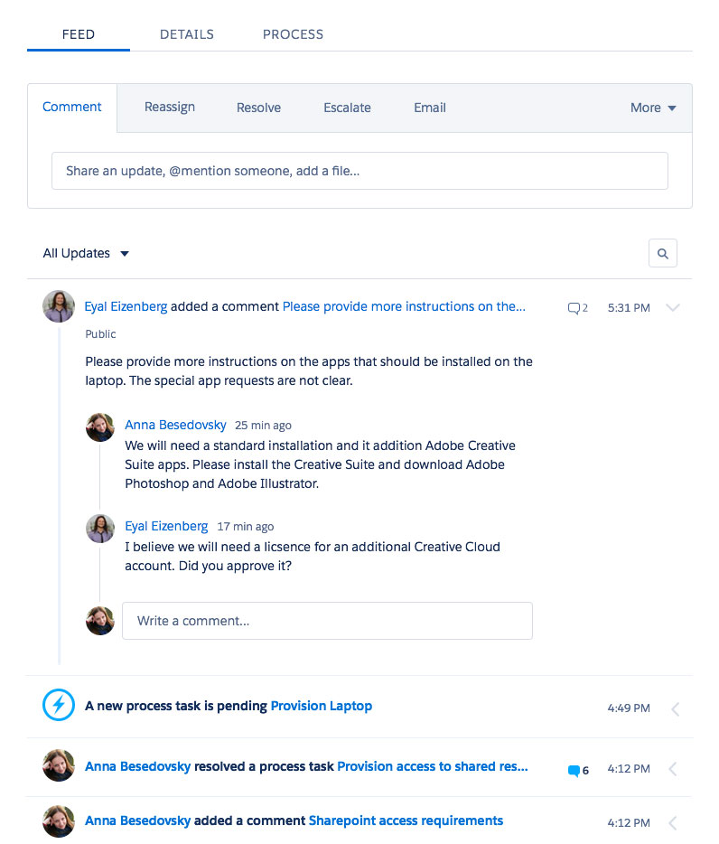
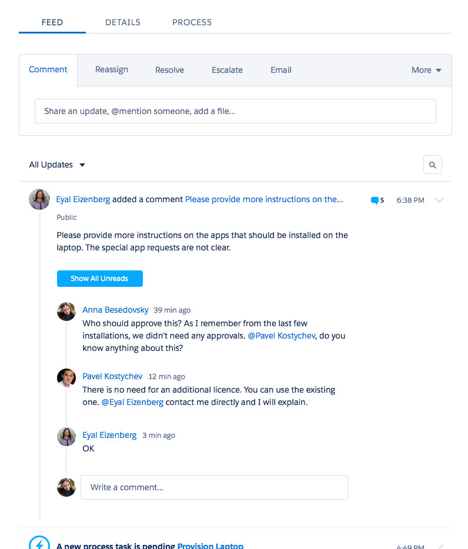
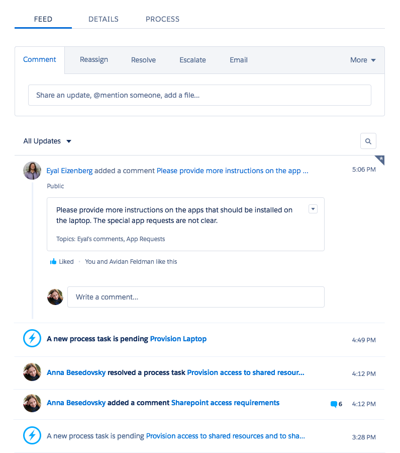
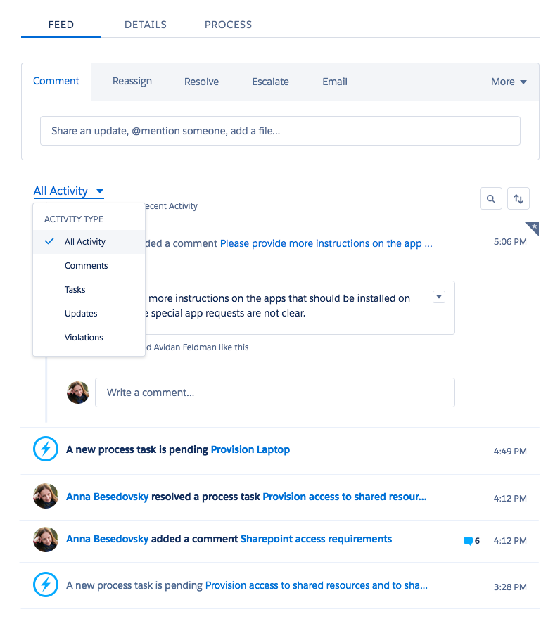
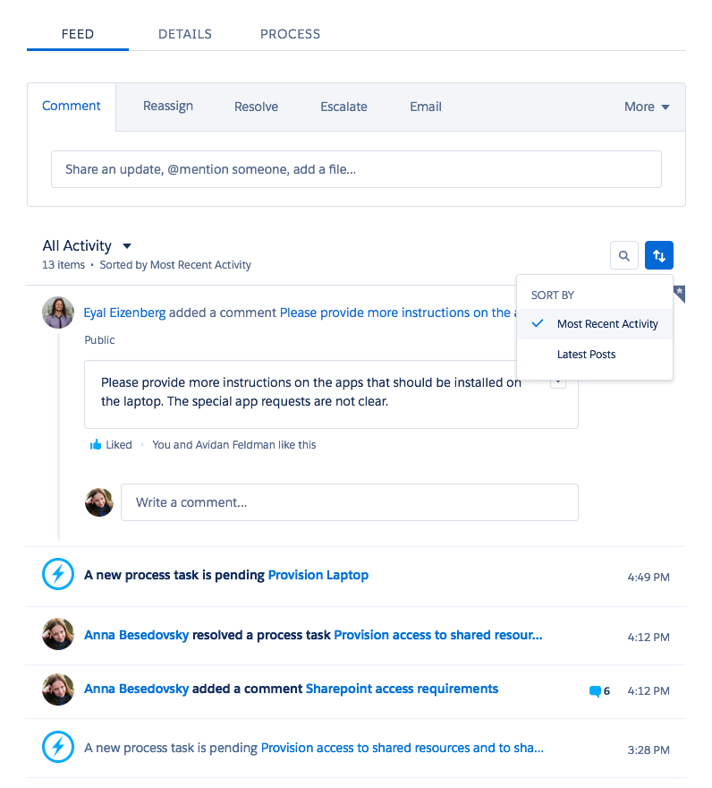
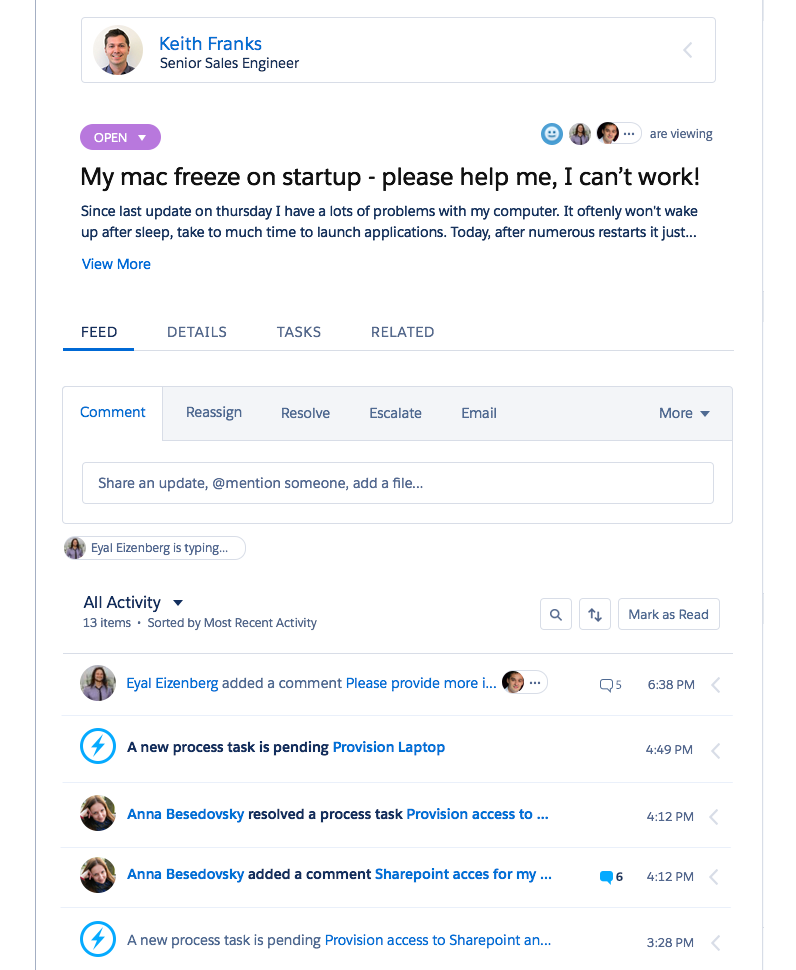
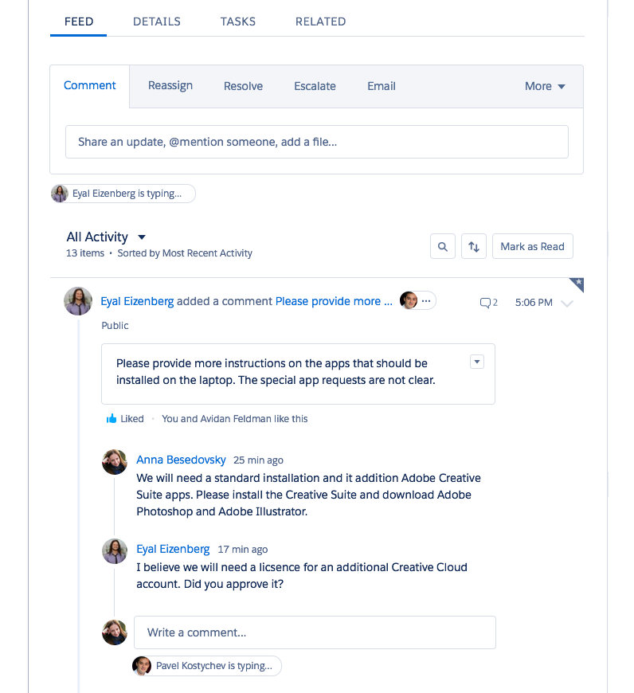

Working closely with product and engineering to understand the requirements, the needs and the limitations Creating different versions and discussing usabilityCreating final design
The first step was creating a flow to add a new comment
The second step was designing an option to add a subcomment, that required some design changes
  The nexts step was adding the feed item properties, such as: bookmark, like button, tags etc.
Adding the filter and sorting options to the feed
 The final step was adding indication when another person is viewing the incident and, most importantly - typing a comment
 